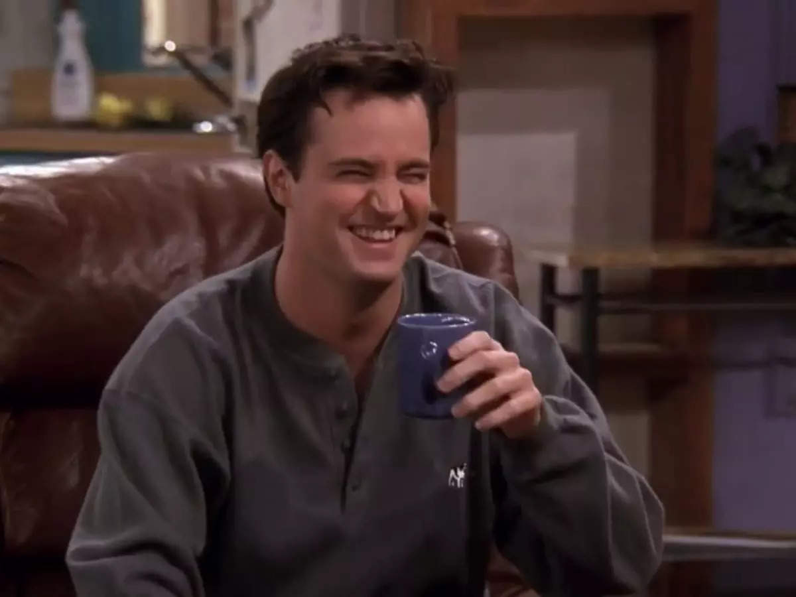

Chandler Bing
Chandler is known for his sarcastic humor and bad luck in relationships. He works in a job he hates — statistical analysis and data reconfiguration — but later pursues a career in advertising. He marries Monica and they adopt twins.
Check out some Fun Facts about Chandler!
👇

Chandler Bing is known for his sarcastic sense of humor. His witty one-liners and sarcastic remarks have made him one of the most memorable characters on Friends.